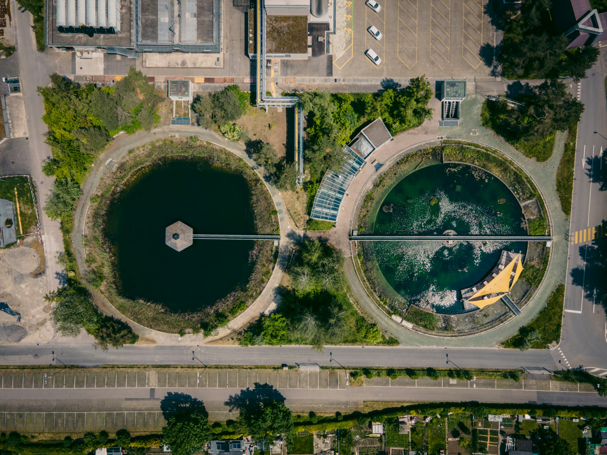
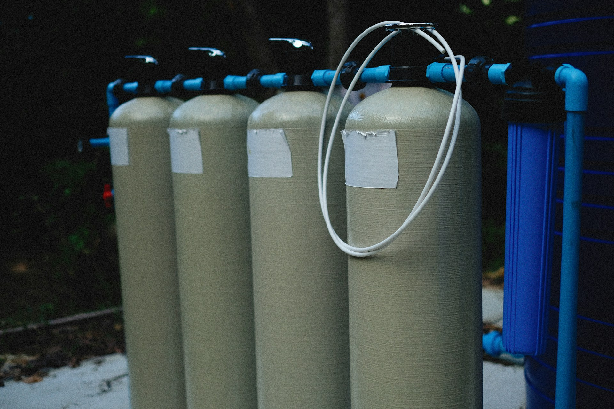
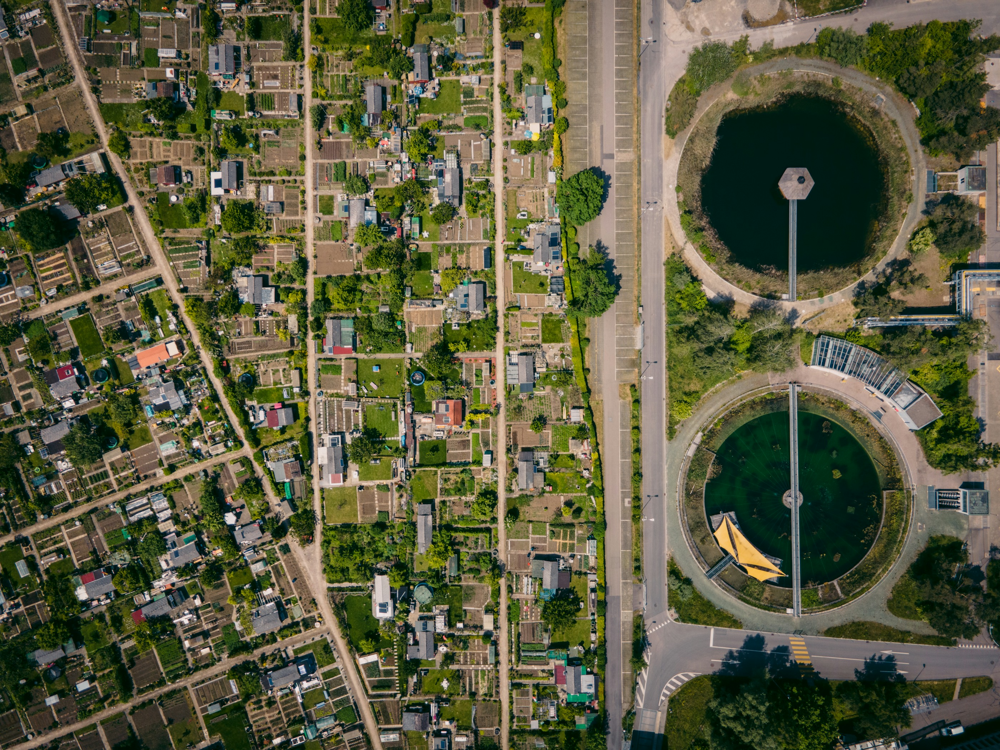

LATEST INSIGHTS
BLOG
Home
/
Blog

ZLD
Complete ZLD Guide 2024
Read Article

RO Reject
RO Reject Treatment Guide
Read Article
Technology
ZLD Cost Comparison: Thermal vs Non-Thermal
Read Article

Leachate
Leachate Treatment Guide
Read Article
Systems
ZLD Systems Overview
Read Article